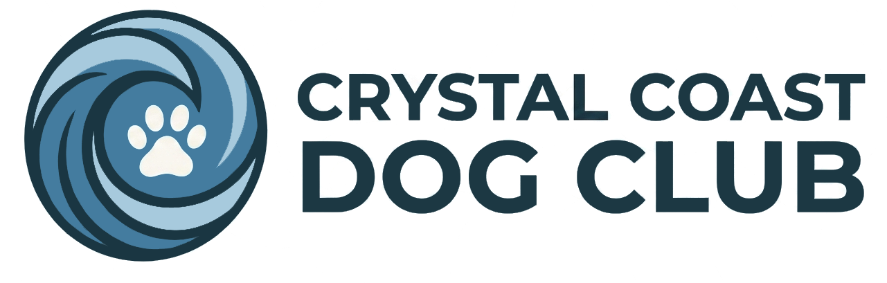

A lot of people want to help local rescue. Fewer know how, or have time for a heavy volunteer commitment. We built this club as the bridge — no guilt trips, no pressure, just community doing what community does best.
Our longtime partner, doing the day-to-day work of caring for local shelter dogs and getting them into homes.
A rescue we've stood behind from early on, doing the hard work most people never see.
Because rescue isn't just dogs, and neither is our community.
Different events support different partners depending on where the need is that season.
Every pack walk, every yappy hour, every ticket to a signature event puts real dollars and real visibility behind the dogs still waiting for their people. Photography, awareness, funds — it all comes from people showing up because they wanted to.
Keep an eye on our socials and events page for adoptable dogs, shelter updates, and the stories behind the work our partners do every day.